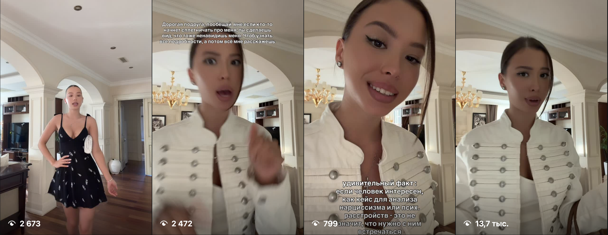
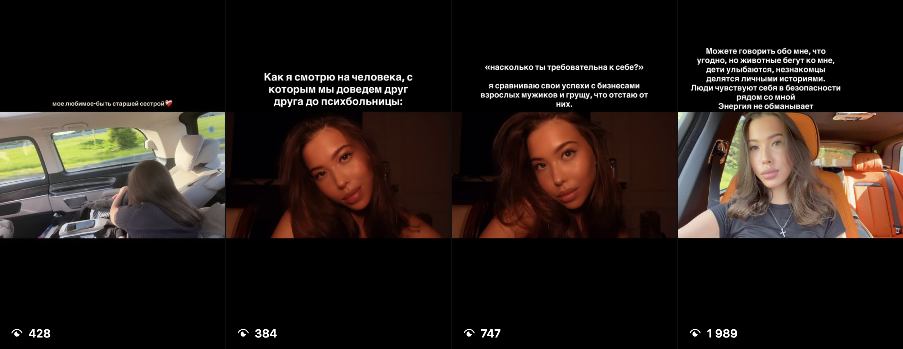
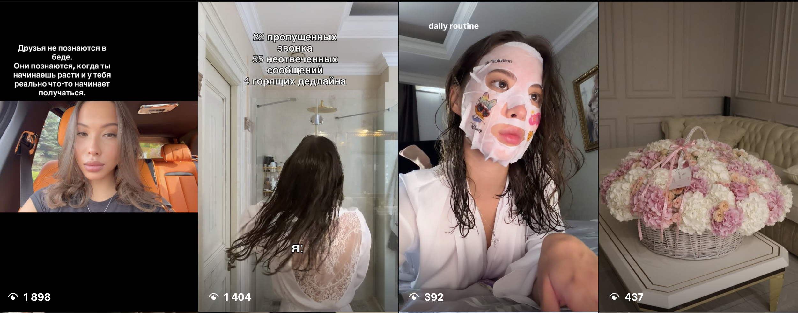
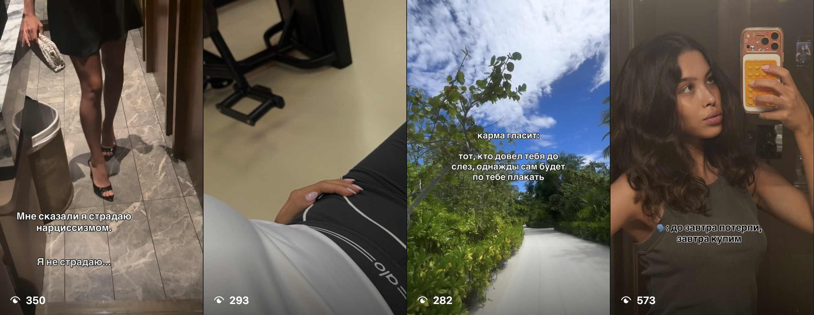

02 · Что уже живёт в ленте
Темы, на которых строим
По текущему контенту видно три параллельных потока. Всё на премиум‑визуале — осталось собрать их в единую систему и добавить твой голос.
Luxury‑лайфстайл
- Дорогие авто, премиум‑салон
- Особняк, классические интерьеры
- Пионы, эстетика быта
- Поездки, Мальдивы
- Рестораны, атмосфера
Женственность и образ
- Сатиновые платья, total‑look
- Милитари‑китель, стиль
- Бьюти и уход, ритуалы
- Дочка — парные образы
- Премиальный backstage
Рефлексия и смыслы
- Аффирмации, мысли о себе
- Отношения, психология
- Требовательность к себе
- Мотивация и рост
- Личные истории


Пробные Reels уже разлетаются — среди них ролики на 50 200 и 13 700 просмотров.



Талант к контенту уже есть — нужно дать ему форму, ритм и вектор.